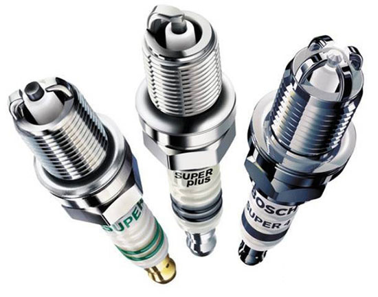

Замена свечей зажигания своими руками: советы и ошибки
Свечи зажигания — это важный элемент системы зажигания автомобиля. Они воспламеняют топливно-воздушную смесь в цилиндрах двигателя. Со временем свечи изнашиваются: появляются нагар, эрозия электрода или увеличивается зазор. Все это приводит к потере мощности, повышенному расходу топлива и нестабильной работе двигателя. Поэтому их необходимо своевременно менять.
Когда менять свечи зажигания?
Рекомендуемый интервал замены зависит от типа свечей:
- Обычные (медные) — каждые 20–30 тыс. км;
- Иридиевые или платиновые — каждые 60–100 тыс. км;
- Также свечи меняют при появлении признаков неисправности: троение двигателя, трудный запуск, провалы при разгоне.
Что понадобится для замены?
- Новый комплект свечей (рекомендованных производителем);
- Свечной ключ или головка с удлинителем;
- Динамометрический ключ (для правильного момента затяжки);
- Щуп для проверки зазора (при необходимости);
- Чистая тряпка и компрессор (для продувки колодцев).
Пошаговая инструкция
1. Заглушите двигатель и дайте ему остыть.
2. Снимите декоративную крышку мотора (если есть).
3. Аккуратно отсоедините высоковольтные провода или катушки зажигания.
4. Продуйте свечные колодцы, чтобы грязь не попала в цилиндры.
5. С помощью свечного ключа выкрутите старые свечи.
6. Проверьте зазор на новых свечах и при необходимости отрегулируйте.
7. Вкрутите новые свечи сначала вручную, затем затяните динамометрическим ключом с усилием, указанным производителем.
8. Установите катушки или провода обратно.
Типичные ошибки при замене
- Слишком сильная затяжка — может повредить резьбу в головке блока.
- Слабая затяжка — свеча может выкрутиться или привести к пробою.
- Использование неподходящих свечей — нарушает работу двигателя.
- Неочищенные свечные колодцы — грязь попадает внутрь цилиндра.
- Смешивание разных типов свечей — приводит к неравномерной работе двигателя.
Заключение
Замена свечей зажигания — простая процедура, доступная даже новичку. Главное — соблюдать рекомендации производителя и не допускать распространённых ошибок. Правильно подобранные и установленные свечи обеспечат устойчивую работу двигателя, экономию топлива и лёгкий запуск автомобиля.